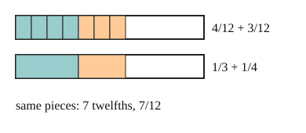

Part of Adding Fractions. Answer in the chat (1: ..., g: c), add sure or guess after any answer, and say done when finished.
Last time: what is 1/3 + 1/4? You said a) 2/7. It is b) 7/12.

Thirds and fourths are pieces of different sizes, so their tops cannot be added as they stand (notes 3). Cut both into pieces of one size first. 12 is a multiple of 3 and of 4, so 1/3 = 4/12 and 1/4 = 3/12 (notes 2). Now the pieces match:
1/3 + 1/4 = 4/12 + 3/12 = 7/12
Any common multiple of the bottoms works; the least one keeps the numbers small (notes 4).
Q1. What is 2/5 + 1/3?
6/15 + 5/15 = 11/15 (sure)
Q2. What is 3/4 - 1/6?
3/4 = 18/24 and 1/6 = 4/24, so 18/24 - 4/24 = 14/24 (sure)
Q3. Jo says 1/2 + 1/3 = 2/5, adding tops and adding bottoms. In your own words, what is wrong?
halves and thirds are different sized pieces, so you cannot just count them together. Over sixths it is 3/6 + 2/6 = 5/6. And 2/5 is less than 1/2, so it cannot be 1/2 plus something more
What is 1 1/2 + 2 2/3?
c